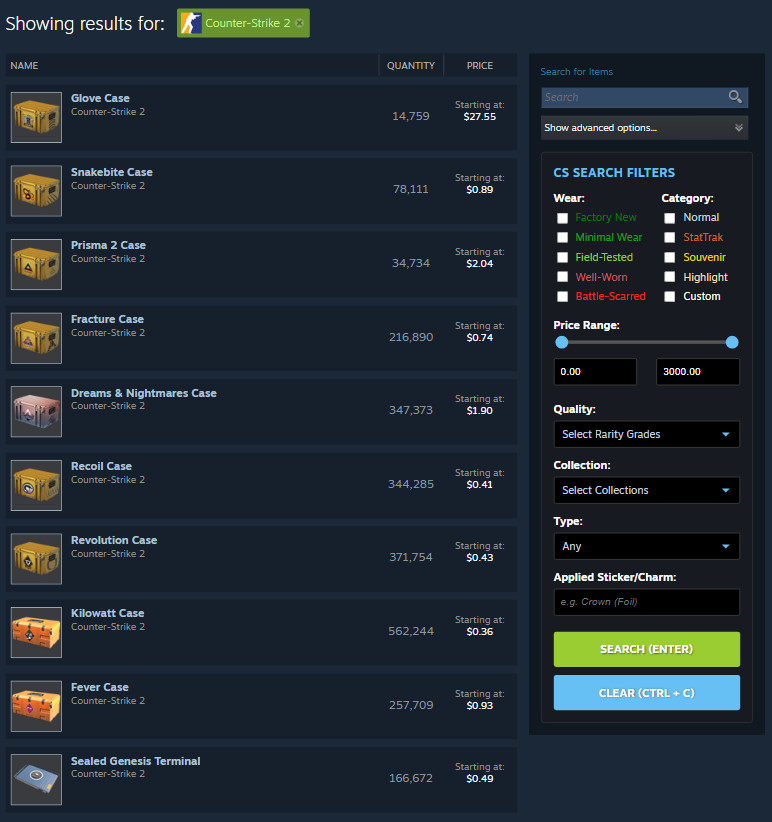
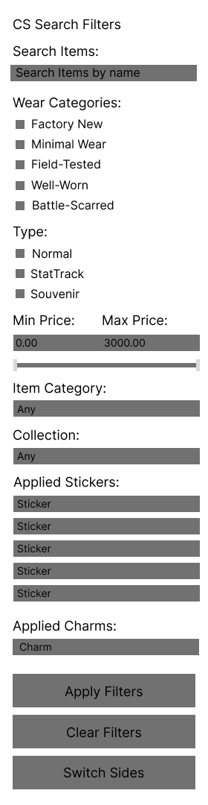
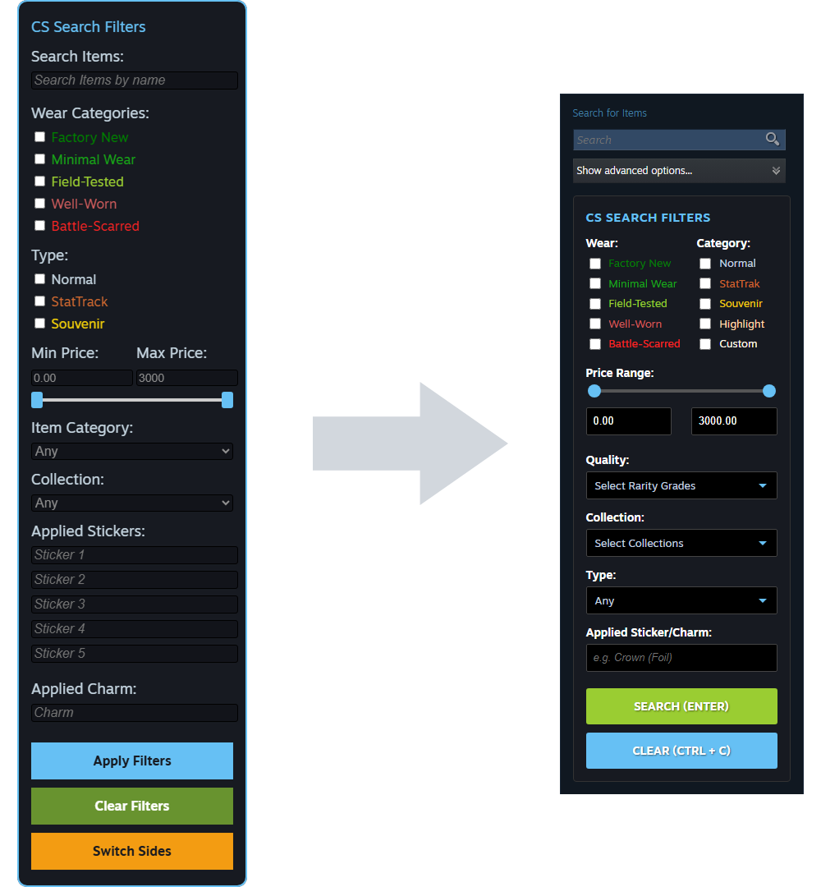
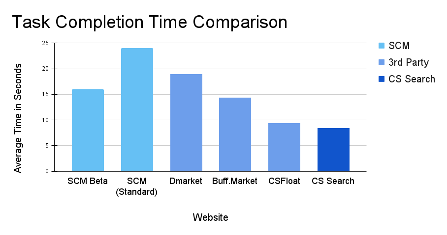

CS Search
CS Search is a browser extension designed to eliminate search friction on the Steam Community Market. Now in Version 2.0, the redesigned interface centralizes common filters in an accessible layout, significantly improving interaction speed for power users.
The Problem
Steam’s Community Market for CS2 feels outdated compared to modern third-party marketplaces. Its search menu requires significantly more keystrokes and clicks to complete the same tasks, creating friction and slowing users down. This inefficiency makes performing frequent searches unnecessarily difficult for power users, often driving them to alternative marketplaces.
To better understand these pain points, active CS2 investors and traders were surveyed. Their feedback highlighted frustrations with the current search interface and emphasized a need for streamlined access to commonly used features and an easier way to search for applied stickers and charms.
Design Goals
- Reduce the number of clicks and keystrokes for frequent searches
- Showcase commonly used features while keeping the interface familiar
- Maintain visual consistency with the current Steam Community Market design
Wireframes
Initial wireframes outlining the redesigned menu structure and key user flows. The design emphasizes accessibility, streamlined navigation, and intuitive placement of common features.
Implementation
The redesigned menu was built using HTML and JavaScript, styled to match the Steam Community Market’s existing color palette and menu patterns for a seamless look. Accent colors inspired by other CS2 marketplaces were added to help users quickly distinguish common elements. Unlike the native version, which hides search parameters behind a menu, CS Search takes advantage of available screen real estate by remaining persistent and fully visible. This eliminates unnecessary clicks and keeps all tools accessible at all times.
Furthermore, I streamlined the search process for applied stickers/charms by offering direct support for a search bar for this. A feature that is poorly implemented in both versions of the SCM, where it is either hidden behind a manual quote-based query and an additional button, or restricted by a forced category search, which the user may not want.
Iteration: From Version 1.0 to Version 2.0
After months of regular use as well as the release of a new beta from steam for the first time in years which added new features. I conducted a expert review of Version 1.0 of CS Search and identified interactions that could be improved as well as redesigned the menu to be more space efficient.
The insights gained from my initial version led to the development of Version 2.0, which focuses on three primary areas of refinement:
- Eliminating Redundancy: My initial version included a custom search bar with autofill. However, when Steam updated the Community Market with a autofill feature, I pivoted my design to avoid redundancy. I integrated my specialized filters directly into the built-in search bar, creating a more seamless and less cluttered experience.
- Spatial Optimization: To reclaim screen real estate, I consolidated checkbox menus into a multi-column layout. By placing filters side-by-side rather than stacking them vertically, I significantly reduced the UI footprint. I also streamlined the sticker and charm search logic by consolidating multiple input fields into a single, efficient query string. Additionally, I moved the menu to a fixed, central location to ensure consistent accessibility.
- New Features: Version 2.0 introduces the 'Quality' (Rarity) filter, which was omitted from the initial version due to space constraints. By replacing long checkbox lists with collapsible dropdown menus, I was able to include these essential categories without overwhelming the user or cluttering the interface.
Results
Efficiency Improvements
To quantify the impact of the interface, I conducted a series of controlled benchmarking tests measuring Task Completion Time (TCT). The test scenario involved a complex, multi-parameter search, "AK-47/Rifle, Redline, Field-Tested, Minimal Wear & Normal", which requires several filtering steps.
While the SCM Beta successfully reduces search time compared to the legacy market, the results from CS Search prove that there were still significant efficiency gains to be made over the native version. By restructuring the layout to place the most common filters in a high-density, intuitive grid, I eliminated the need for repetitive scrolling and UI refreshes. This streamlined navigation allowed for a further 47.5% reduction in task time, capturing efficiency that standard version had yet to unlock. Furthermore, CS Search outperformed established third-party marketplaces, demonstrating that its specialized design significantly reduces friction for power users during high-frequency searches.
Conclusion
The development of CS Search evolved through an iterative process, moving from an initial version to a highly optimized v2.0. By analyzing interaction bottlenecks in both the legacy market and the new SCM Beta, I was able to transform the search experience into a precision tool for power users.
The final design successfully reduced task completion time by 47.5% compared to native benchmarks. The result of this project is a more productive, lower-friction workflow that keeps users integrated within the Steam ecosystem while providing cutting-edge search speed.